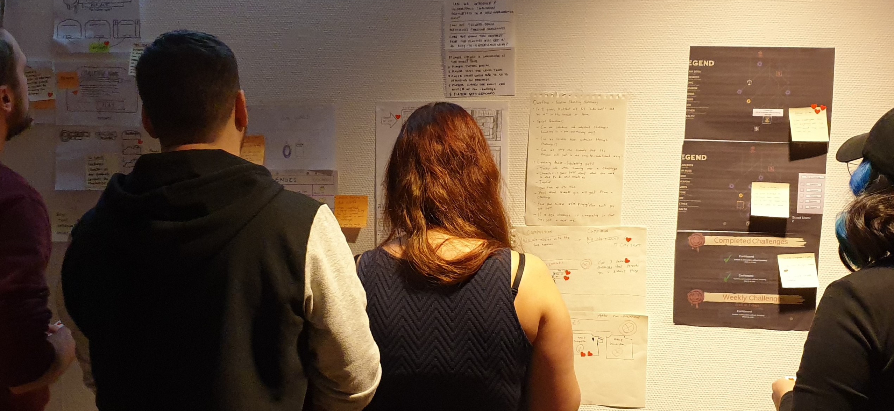

We created and tested concepts for a challenge system for Overflow Games'' rogue-lite shooter game Madshot.
We conducted research, benchmarked, and playtested Madshot and five other games that inspired it.
We then created concept sketches and prototypes, which we tested through multiple iterations.
The final prototype received positive feedback, with the majority of players understanding and enjoying the challenge system.
As the project leader, I was responsible for organizing and managing the project, as well as maintaining communication with the client and overseeing & participating in the design and prototyping process.
DEFINING & RESEARCHING
The project involved designing and testing challenge concepts for Overflow Games' Madshot, a rogue-lite shooter game.
The goal was to create a non-grindy challenge system that would be well-suited to the game and not overwhelming to players, fans of fast-paced rogue-lites.
The research focused on understanding the current challenge system in Madshot, how challenges are implemented in other games, and what makes players feel cool when playing a rogue-lite.
We also sought clarification from Overflow on Madshot, as the game was in pre-alpha at the time.
5 games that inspired Madshot
Screenshot from Madshot pre-alpha

Concept sketches
From the concepts, we created 4 versions of the prototype
PROTOTYPING & TESTING
We ideated and identified five key concepts, including introducing challenges through cutscenes and allowing players to choose new challenges during runs, and selected the top solutions to prototype.
To guide the prototyping and testing process, we created a storyboard and player journey.
We developed four versions of the prototype, incorporating feedback from player test sessions to make improvements in each iteration.
During the tests the players were introduced to the challenge system through the prototype, and the gameplay through an alfa on Steam.
The final prototype received positive feedback, with most players finding the challenge system easy to understand, navigate, and well-integrated into the game's lore and theme.
Overall, the challenge system received a positive response from players, with a majority expressing gratitude for its ease of understanding and appreciation for the incentive it provided to continue exploring the game.
Presentation day!
"Super useful!"
"We're definitely going to use this!"
"You've been very resourceful!"
Some quotes from Overflow
From prototype, to implemented solutions
DELIVERY & TAKEAWAYS
I successfully presented our findings and proposed solutions to Overflow Games, who were satisfied with the results and implemented the proposed challenge system in Madshot.
During the project, we learned that switching between the prototype and the game during testing could be confusing, and that it can be challenging to test concepts at a very early stage of game development.
Therefore, we advised Overflow to conduct their own testing after implementation to ensure smooth player flow.
We also learned the importance of reminding test players to focus on the prototype and concepts, rather than the pre-alpha version of the game, and the value of conducting a mock test session before actual playtests.
Our challenge was to create a non-grindy challenge system which would not overwhelm the players, and fit the style of the game.
Target Group
People who like fast paced rogue-lites.
Poster for Madshot
5 games that inspired Madshot
Screenshot from Madshot pre-alpha
2. RESEARCH
During our first meeting with Overflow we asked questions about their goal for the game, and inspirations, in order to truly understand their vision.
Our top research goals were:
How does challenges work in Madshot now?
How does it look in other games?
What makes you feel cool when you play a roguelite?
Playtest
We played the game to undestand the flow, feeling and user journey.
Since Madshot is in pre-alpha it wasn't enough to play the game, we also had to ask for clarification from Overflow.
Benchmarking
During the meeting we identified 5 game titles that inspired them in different ways.
We played these games in order to understand their UI, introduction flow, and art style.
Concept sketches
From the concepts, we created 4 versions of the prototype
3. CONCEPT
Concept sketches
Each team member created a concept that would fulfill the brief. We then voted on the top solutions to iterate on during the prototyping.
Player journey & Storyboard
We created a storyboard for the prototype and test flow for the player tests. This helped us create a better first test session.
Concepts
During our concept workshop we identified 5 top conceps:
Introduce challenges after X amount of time played
Introduce challenges through a cutscene
Show active challenge-information everywhere
Limit amount of information shown at the same time
Choose a new challenge during the run if you completed the active one
4. PROTOTYPING & TESTING
We made 4 versions of the prototype, based on feedback from the player test sessions. I've decided to concentrate on the key insights which helped us move forward in each iteration.
Lo-fi top insights
While most players understood the challenge system and enjoyed the prototype, we got a few great insights to help us better the prototype:
20% of the users didn't understand that you could only have 1 active rite
20% of the users thought the book was a bit overwhelming
20% didn't understand that the popup for "choose new rite" was the same challenge system as before
Mid-fi top insights
During this version we incorporated Overflows wish to call "challenges" "rites", to better fit their atmosphere. They also wished the rites would be introduced by the character "The Butler".
We still had a majority of positive feedback, especially regarding being able to chose a new rite, and the cutscenes, but some key insights for the next iteration was:
17% didn't understand that "rites" was challenges
17% didn't understand that the rite was active during multiple levels
17% wasn't sure they activated a challenge or not
Hi-fi v.1 top insights
The more hi-fi we became, the better the undertstanding was for the players, and the more they focused on details. Some things we could do better in the next iteration was:
60% of the players wanted progress information of the rites (like 4/20 enemies killed)
40% of the players wished for an option to skip cutscenes
40% of the players didn't spot the information-symbol at the rewards
Summary of tests
Through the gathered data we could see an overall positive attitude towards the rite system throughout all the iterations.
The users thought the rites system was easy to understand, navigate and regarding the lore and UI aspect – it was well incorporated to fit the theme of the game.
They also expressed positive feeling about being able to choose a new rite immediately.
While some aspects of the concept seemed a bit unnecessary for the more experienced rouglite/rouglike player, a majority of the users expressed gratefulness towards making the rites easy to understand.
They also said it gives them a reason to explore the game further – challenging themselves to become better and better at the game.
Player demographic
Introduce challenges after a while, and with a cutscene
Show more information about challenges when first opening the book & let players choose a new challenge when they have completed the last one during the run
View of challenges in the zone map
Progress of the challenge in the level
Showing progress and challenge information during pause
Animation when the challenge is completed
View of the hub when there's an update to the challenges
Presentation day!
"Super useful!"
"We're definitely going to use this!"
"You've been very resourceful!"
Some quotes from Overflow
From prototype, to implemented solutions
5. DELIVERY
We had a great time presenting our insights and concept solutions to Overflow.
They were happy with our work and implemented our challenge-solution!
Though we had tested the concepts we reminded them that they need to implement and playtest the solution, in order to understand the player flow when they use challenges in the game.
6. KEY TAKEAWAYS
Switching between prototype and the game in order to try out concepts was a bit confusing
A bit complicated to test concepts at a very early game stage
Remind test players to focus on the prototype and concepts, not the pre-alpha
Do a mock test session before the actual playtests
We had a team retrospective after the presentation!